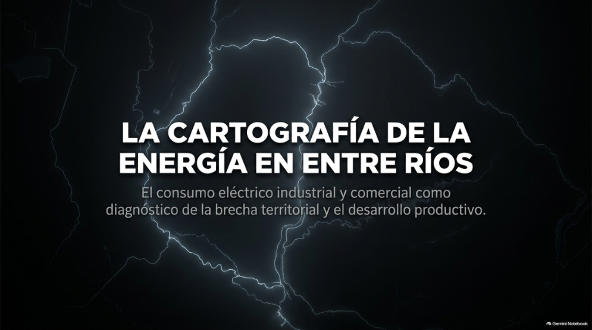
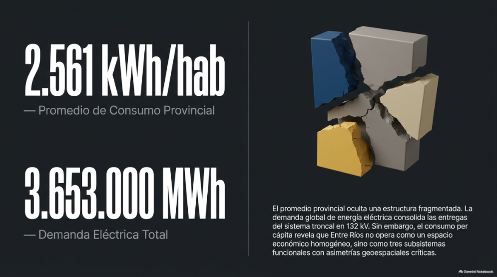
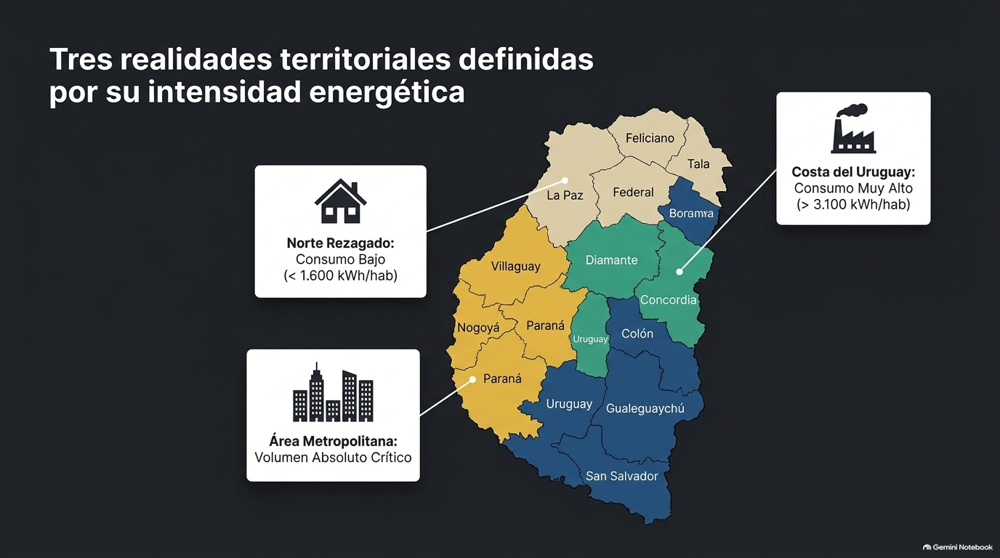
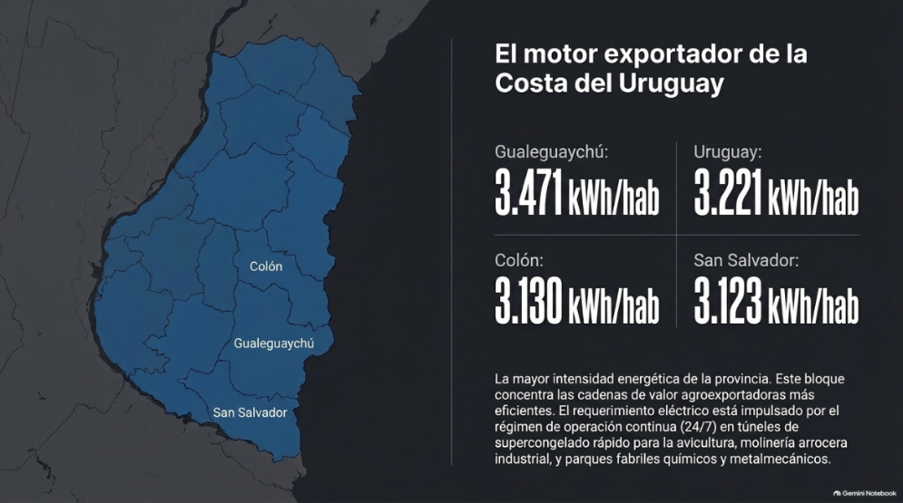
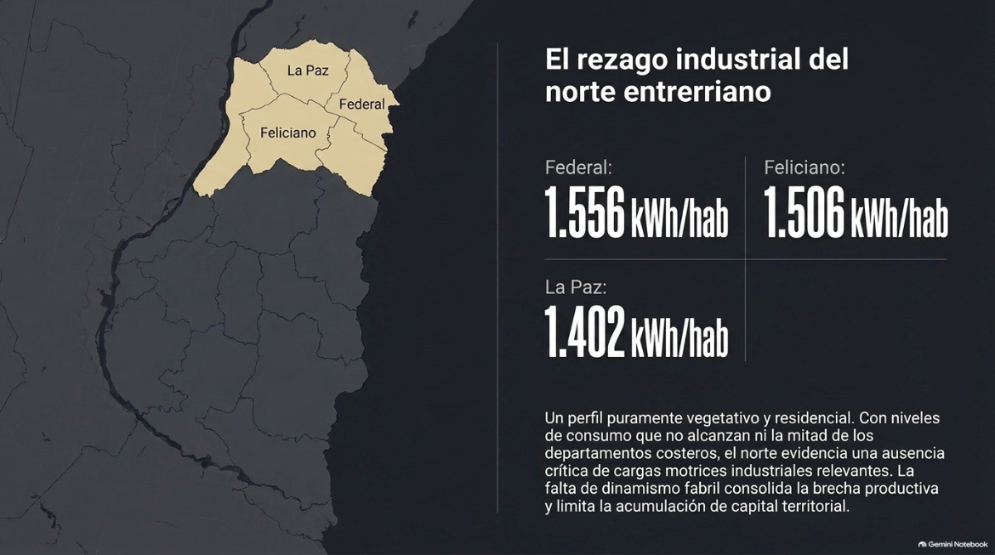
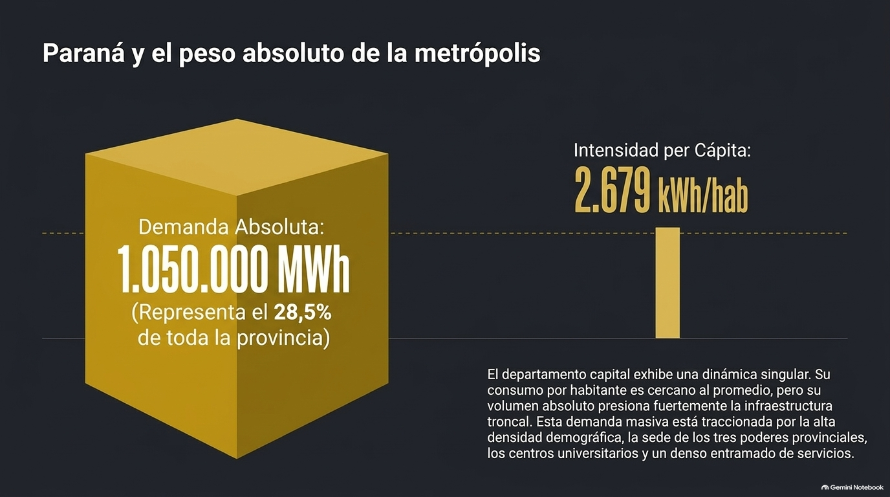
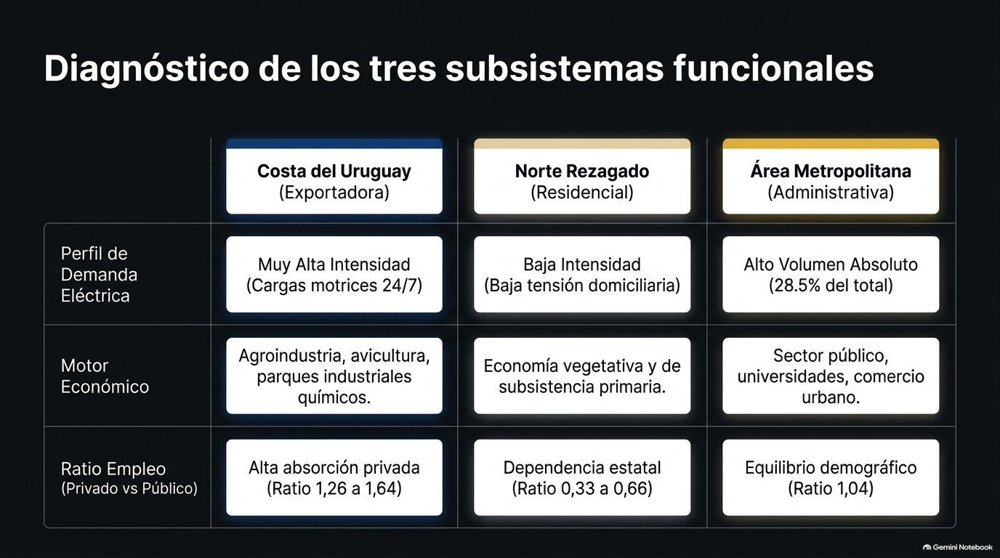
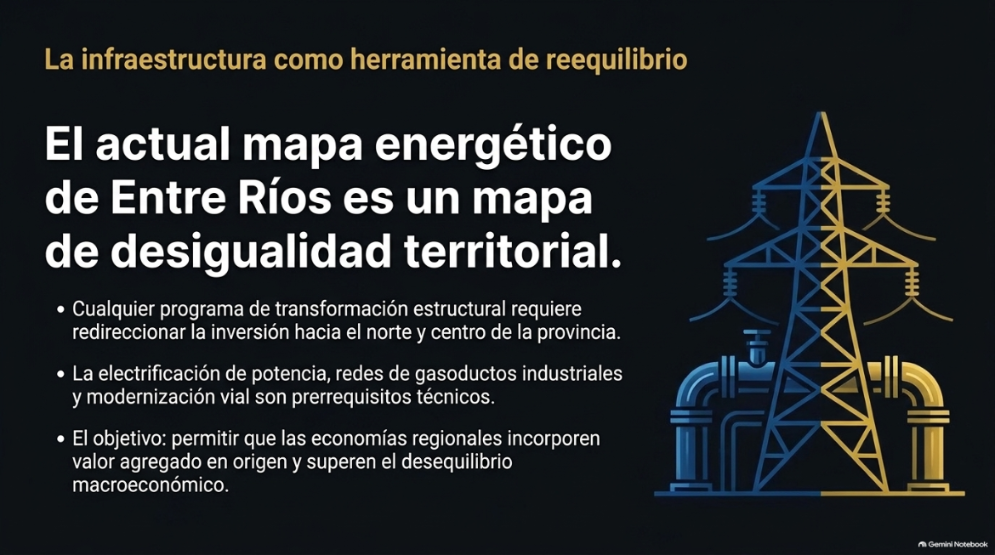

Análisis asociado al mapa
Análisis del consumo eléctrico industrial y comercial en Entre Ríos
Lectura complementaria del mapa departamental de consumo energético.
Fecha de creación: 1 de noviembre de 2026








